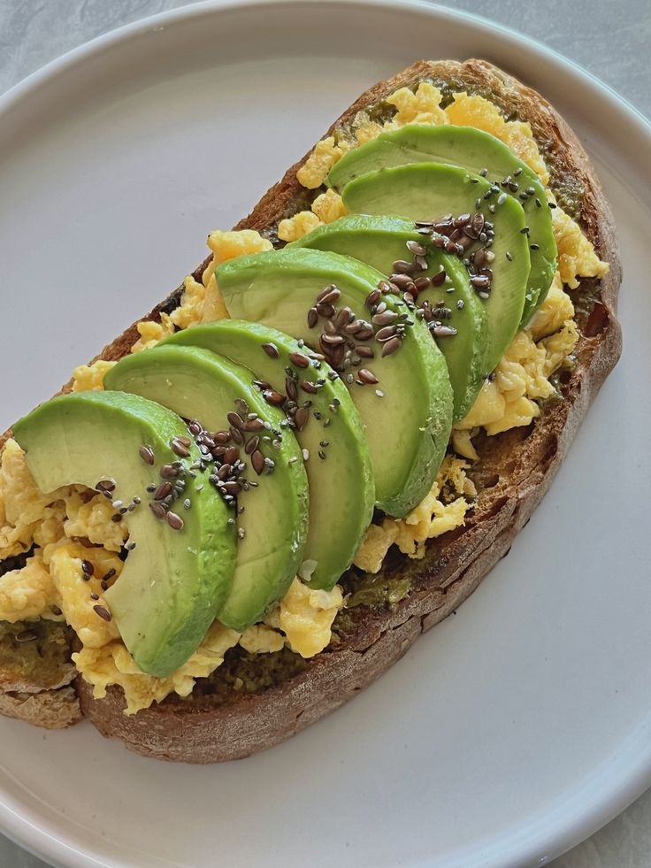
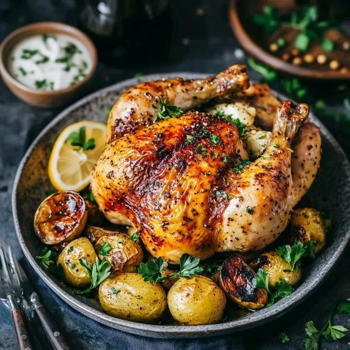
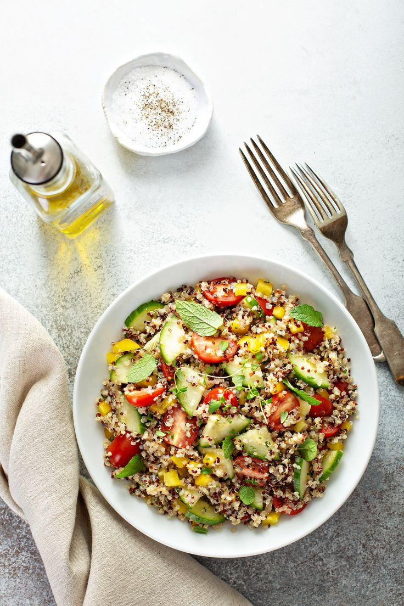
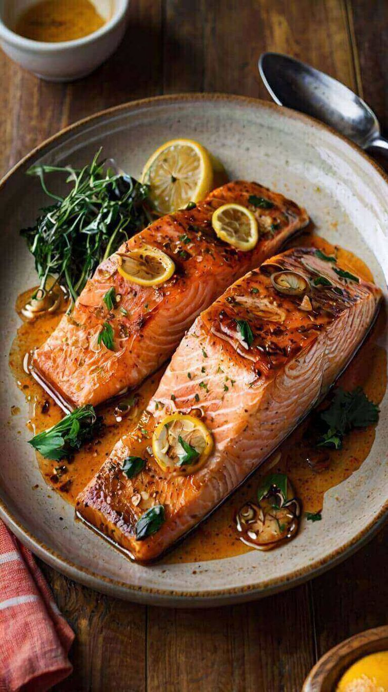
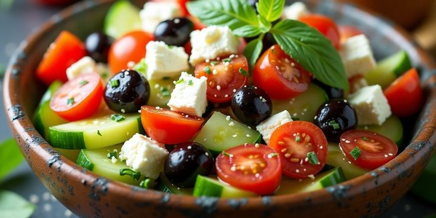
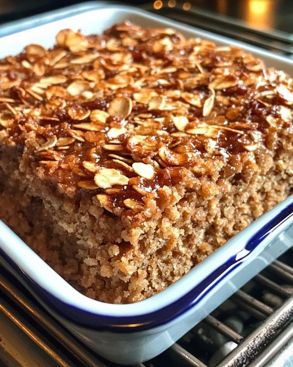
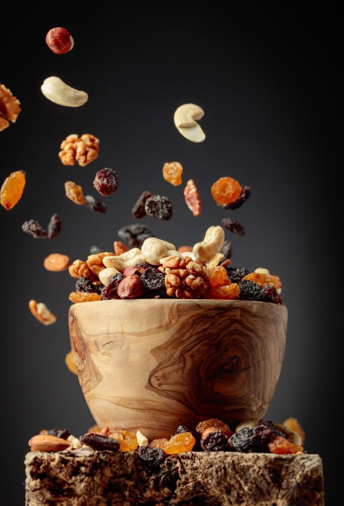
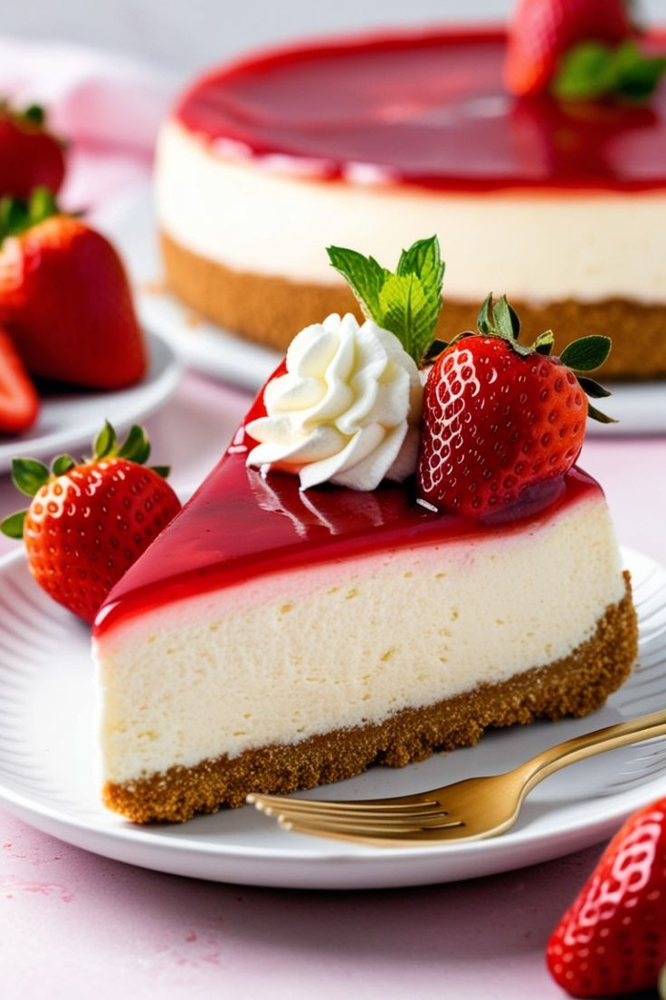

وصفات التصنيف
فطور
العجة بالخضار

الخبز الفرنسي مع الأفوكادو
غداء

الدجاج المشوي مع الخضار

سلطة الكينوا
عشاء

سمك السلمون مع الليمون

السلطة اليونانية
وجبات خفيفة

كعك الشوفان بالعسل

مكسرات مشكلة
حلويات

تشيز كيك الفراولة